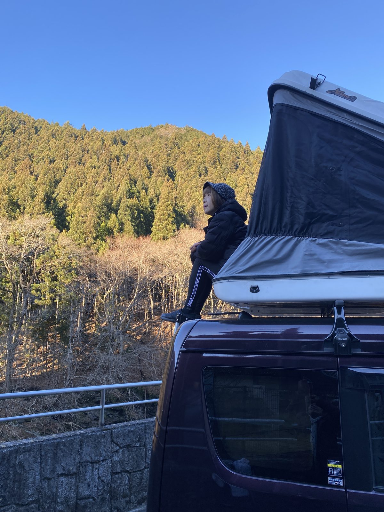

About TriArk
TriArkトライアーク
陸・海・空をつなぐ、世界にひとつだけの旅へConnecting land, sea, and sky — a journey unlike any other
はじめるBegin↓
About TriArk
陸・海・空をつなぐ、世界にひとつだけの旅へConnecting land, sea, and sky — a journey unlike any other
目的地へ運ばれるだけの旅ではなく、移動している時間そのものに価値を見出したい人へ。旅をしながら暮らしたい人へ。For those who seek value not just in the destination, but in the time spent moving toward it. For those who long to live while they travel.
規格化された旅では満たされない、"人とのつながりを通じた旅"への欲求に応える。TriArk answers a desire that standardized travel can never satisfy — the desire for a journey built on human connection.
自分の「ハコ（乗り物）」で、世界中の人と旅の体験を分かち合い、もてなしたい人。Those who want to share the joy of travel with people from around the world, through their own "vessel."
移動手段も、出会う人も、自分の理想の旅を実現したい人。Those who want to shape their ideal journey — the way they move, and the people they meet.
オーナー自身が案内し、その知識・文化・情熱が体験そのものになる。The owner guides you in person — their knowledge, culture, and passion become the experience.
ホストの現在地を地図で検索し、その場で合流。計画しない出会いが最高の旅を生む。Find a host's location on the map and meet up on the spot. The best journeys come unplanned.
ホストとゲストが、旅を通じてつながり、言語・国籍を超えたコミュニティが広がっていく。Hosts and guests connect through travel, and a community spreads beyond language and nationality.

一生、旅をしながら世界中の人と出会いたい。To travel for a lifetime, and meet the world as I go.
そんな夢のような人生を、誰もが実現できる仕組みを作ろうと思った。That dream should be within anyone's reach. I set out to build it.
キャンピングカーの旅から。日本の一地域で、信頼できるホストとゲストの小さな輪をつくる。Starting with campervan journeys. In one region of Japan, we build a small circle of trusted hosts and guests.
クルーザーの体験を加え、旅の舞台を水の上へ。ホストの輪を、少しずつ広げていく。We add cruiser experiences, taking the journey onto the water — and widen the circle of hosts, step by step.
空の体験へ。国境を越え、言語や文化の違いを超えてつながる、世界規模のコミュニティを目指す。Then, to the skies. We aim for a global community that connects across borders, languages, and cultures.
TriArkは、いま始まったばかり。この旅の最初の仲間を、探しています。TriArk has only just begun. We are looking for the very first companions on this journey.
あなたにしかできない旅がある。
それを、世界中の人たちと
分かち合いませんか。There's a journey only you can offer.
Why not share it
with the world?
世界にひとつだけの旅がある。
それを、ホストと共に
体験してみませんか。There's a journey unlike any other.
Why not live it,
together with your host?